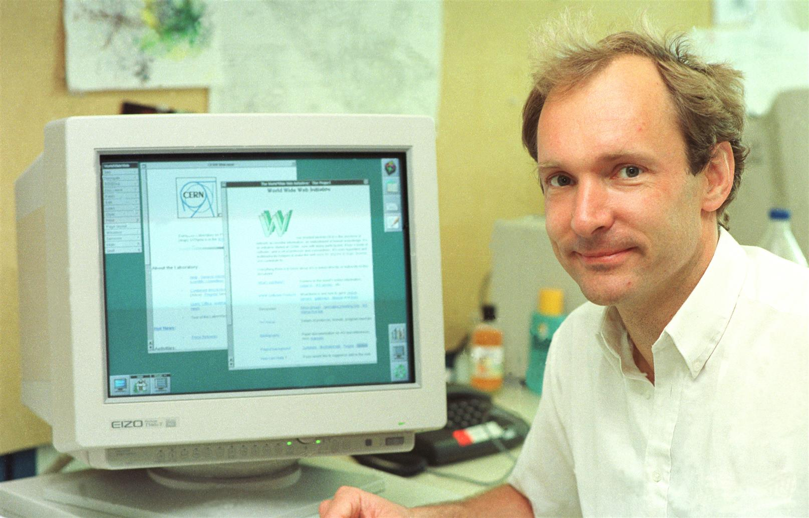

Historia de Internet - Línea del Tiempo
Desde ARPA hasta la era de la nube

Eventos Relacionados
| 1984 - DNS | 1990 - Primer Navegador | 1993 - Mosaic | 1995 - Internet Comercial |
1989 – Nace la World Wide WebEn marzo de 1989, un científico británico llamado Tim Berners-Lee, que trabajaba en el CERN (Organización Europea para la Investigación Nuclear) en Suiza, presentó un documento que cambiaría el mundo: "Information Management: A Proposal". En este documento, Berners-Lee proponía un sistema revolucionario para organizar y acceder a información distribuida en múltiples computadoras a través de Internet. El problema que Berners-Lee intentaba resolver era muy real: en el CERN trabajaban miles de científicos de diferentes países, cada uno usando diferentes tipos de computadoras y sistemas. Compartir información era extremadamente difícil. Los documentos existían en diferentes formatos, en diferentes máquinas, y no había una forma estandarizada de vincularlos o referenciarlos. Berners-Lee imaginó un sistema basado en "hipertexto" - documentos que pudieran contener enlaces a otros documentos, permitiendo a los usuarios saltar fácilmente entre información relacionada. Lo más notable de la visión de Berners-Lee era su universalidad. No diseñó la Web para un tipo específico de computadora, sistema operativo o aplicación. La Web fue concebida desde el principio como una plataforma abierta, accesible e independiente de la tecnología subyacente. Esta apertura sería clave para su adopción explosiva en la década siguiente. Aunque Internet ya existía, la World Wide Web proporcionó la interfaz amigable que finalmente haría la tecnología accesible para el público general.  🔗 Fuente: w3.org/History |